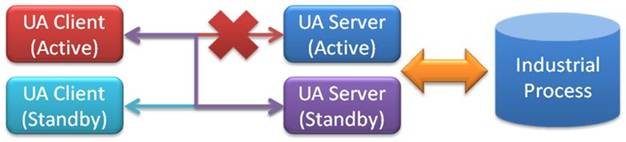

OPC UA特点
OPC UA （Unified Architecture， 统一架构）是下一代的OPC 标准，通过提供一个完整的，安全和可靠的跨平台的架构，以获取实时和历史数据和时间。
OPC UA基于OPC基金会提供的新一代技术，提供安全，可靠和独立于厂商的，实现原始数据和预处理的信息从制造层级到生产计划或ERP层级的传输。通过OPC UA ，所有需要的信息在任何时间，任何地点对每个授权的应用，每个授权的人员都可用。 这种功能独立于制造厂商的原始应用，编程语言和操作系统。 OPC UA是目前已经使用的OPC 工业标准的补充，提供重要的一些特性，包括如平台独立性，扩展性，高可靠性和连接互联网的能力。 OPC UA不再依靠DCOM，而是基于面向服务的架构(SOA),OPC UA的使用更简便。现在，OPC UA已经成为独立于微软,UNIX或其他的操作系统企业层和嵌入式自动组建之间的桥梁。
统一的访问
传统OPC COM特性将不同的功能分布于多个COM服务器，通过接口连接代表不同特性的功能。OPC COM服务器提供报警但不持续连续的提供触发报警的数据的访问。例如，提供存储历史数据的OPC COM服务器不允许当前数据被读和更新。这种特性造成了集成的问题，因为单一系统的信息不能通过一致的方式访问。OPC UA解决了包含多种可用信息的通用地址通过单一服务访问的集成问题。
更好的认证互操作性
OPC UA特性通过和已取得成功的OPC COM认证程序一样提供的服务器和客户端测试工具。这些测试工具似得供应商可以验证他们产品是否符合特性的要求，改善产品的质量。OPC UA和OPC COM特性通过认证以后，可以获得相应的认证标志，通过使用OPC认证的产品可以减少最终用户的系统集成成本。
设计的可靠性
OPC UA是为搞可用性和冗余架构而设计。完整的可配置的超时，错误检测，和恢复特性使得OPC UA产品可以无缝处理出现错误或失败的情况（例如网络通信的丢失）。标准的支持冗余功能的OPC UA模块使得从不同厂商的应用部署成为可能。

跨域防火墙和通过互联网
OPC UA由客户端启动通信通道，这意味着不需要像OPC COM一样需要配置客户端以允许服务器的访问。OPC UA能通过标准的HTTP或UA TCP端口或任何管理员愿意开放的其他端口来进行通信。OPC UA使用基于安全的额消息，这意味着可以通过第三方的代理进行通信。
通过信息模型减少配置时间
OPC UA架构提供基本的应用，供应商可以提供特定应用的信息模型，这将大大降低配置和维护这些模块的成本。OPC基金会正和MIMOSA，FDI， PLCopen（IEC61131）组织协作开发 OPC UA信息模型。
标准安全模型
在过去，安全问题时最后才考虑的，很多供应商没有测试他们产品的安全许可。这意味着对于最终用户很难配置安全性，或根本不可能。OPC UA架构通过标准的，UA应用必须实施的安全模型解决了这个问题。这增强了互操作性和降低了配置和维护成本。OPC UA同时有利于适合任何平台的任何OPC UA产品的安全设置管理的标准工具的开发。
从嵌入式系统到企业级的单一的解决方案
轻量级的OPC UA可以作为有效的二进制通信协议，例如OPC UA 已经移植到很多嵌入式系统包括VxWorks，Linux和专有的RTOSs (Real Time Operating Systems)。顶级的OPC UA应用支持企业级标准的XML页面服务协议。通过一个公用的架构可以降低系统集成的成本。
保护已有的OPC COM投资
OPC UA COM的互操作组件可以使得供应商快速实现现有的OPC COM客户端和服务器应用支持OPC UA。 这些组件通过增加需要的OPC UA高级特性客户化。这意味着用户可以持续利用他们的OPC COM技术的投资开发新的OPC UA应用。
历史事件
OPC UA通过支持历史事件扩展了OPC COM历史数据访问(HDA)的能力。最终用户仙子啊可以通过选择的OPC UA客户端获得事件信息。
不丢失性能的同时实现平台独立 OPC UA架构设计为提供最佳性能的同时提供平台独立。这意味着开发者可以使用他们熟悉的语言和操作系统开发基于OPC UA的应用，而不只有一种通过http使用SOAP/XML的选择。对于Windows用户来说，平台独立性也十分具有价值，因为允许应用迁移到下一代的微软通信技术。这也意味着OPC UA产品的供应商在以前的通信技术过时或有类似不可配置的较长的超时时间等技术问题时可以有更多的选择。
高性能的通信协议 OPC UA特性定义基于TCP的二进制通信协议通过最小的开销提供最快的性能。对于企业环境SOAP/XML是通信协议中通常使用的。 OPC UA提供在打包到SOAP/XML兼容的消息中之前通过UA二进制编码消息，提升通常XML消息10倍以上的性能。这种架构的优点是提供使用SOAP/XML的格式，但是在发送之前降低其复杂性和XML的大小。
Windows通信基础 （WCF）
OPC .Net SDK使用WCF提供对XML Web服务的支持。这种架构意味着在企业应用中所有基于OPC UA .Net SDK应用可以继承微软的 XML Web服务的湖操作性。
通过OPC UA SDKs降低开发成本
基于OPC COM特性的开发者都知道要求创建互操作性的应用中，接口只是很小的不部分代码。基于这个原因，OPC基金会提供的OPC UA .NET SDK可以为开发者提供更多的选择，只需要很少的几百行代码就可以实现兼容于OPC UA 的应用。开发者还可以选择提供给OPC 基金会成员的商业化的SDK。这些 SDK将大大降低开发成本，供应商也将更多的精力关注在位客户提供更有价值的产品。最终用户同样可以从SDK中获益，因为采用的是公用的架构，将少了不同应用之间的互操作性问题。
采用方法和程序的增强特性 已经现有的OPC COM特性关注于数据或时间，但很多应用要求能减少单一数据值或事件的复杂操作。通过OPC UA方法，服务器允许客户端通过一序列参数触发复杂功能。通过触发事件汇报进程函数可以用来控制后台流程。
面向对象的信息模型的灵活性 OPC UA采用基于面向对象的设计信息模型。服务器开发者可以利用这么模型开发可重用的组件。客户端开发者可以基于标准对象模型建立标准的组件，可以使用在不同的服务器甚至不同供应商的应用中。
微软逐步淡化COM，而跨平台的Web服务和SOA逐步加强
OPC的供应商希望一套担心的服务实现OPC数据模块（DA，A&E,HDA….）
OPC供应商希望在非微软的平台，包括嵌入式设备实现OPC功能
一些合作组织需要一个可靠的，有效地方式实现高水平结构数据的转移